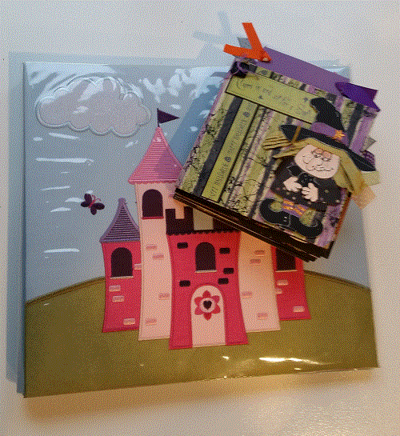
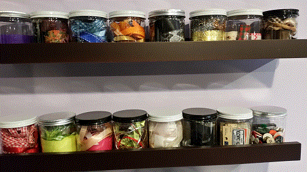

Scrapbooks for Beginners
- If you are new to scrapbooking, never fear. There are many resources available to help you get strated. Here are a few things you need to know.
- Shapes and Sizes 
- Scrapbooks can be big (like the 12x12 books) or small (like the mini 6x8 options).
- Photographs
- Scrapbooks are all about preserving memories. One of the primary elements of a scrapbook is photographs. The good news is you don't have to be an expert photographer. Even some of your worst photographs can make great scrapbook pages. Do you cut off the tops of people's heads when you take pictures? Scrapbook those smiles and styles. Even blurry pictures can be reminders of those kids that never stop moving, so get creative.
- Other Elements 
- You have the photographs, but where do you go from here? Some of the basic scrapbooking equipment includes paper scissors, a paper cutter, adhesives patterned and solid color paper. From there you can build with all sorts of ephemera, such as ribbon, charms, stickers, buttons, brads and so much more.
- Get Creative
- Artists welcome, but you don't have to know a lot about design to create great scrapbooks. If you still feel uncertain, there are lots of collections with prematched paper and design suggestions to get you started.
More Advanced?
- Check out some of the
techniques and tutorials.
- Paper Tearing
- It's old school - but it's also a great way to hone your crafting skills. Sketch out your designs and create your own elements, no scissors required.
- Stamping
- Stamping has come a long way over the past few years. Water color
pencils bring images to life, and for a new effect use a water brush.
- Embossing
- Even an expert will find this technique a little tricky. It's all about controling the powder. Then, just add heat.